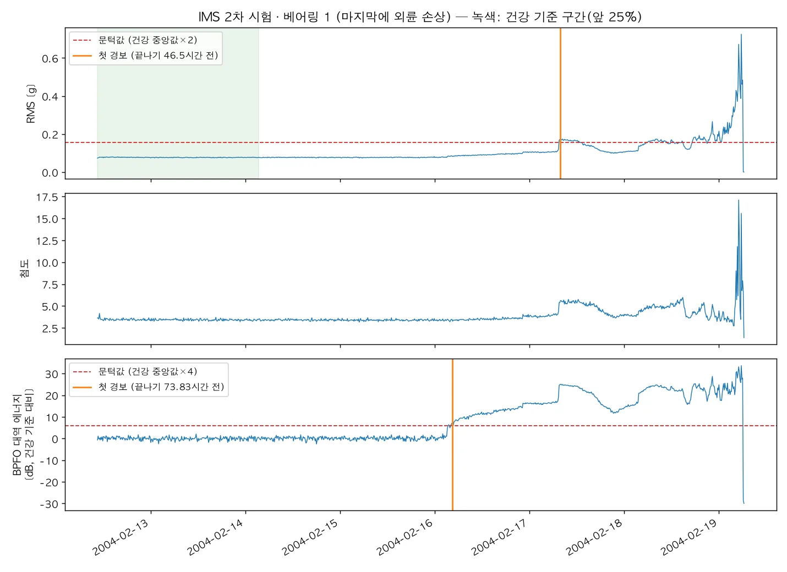
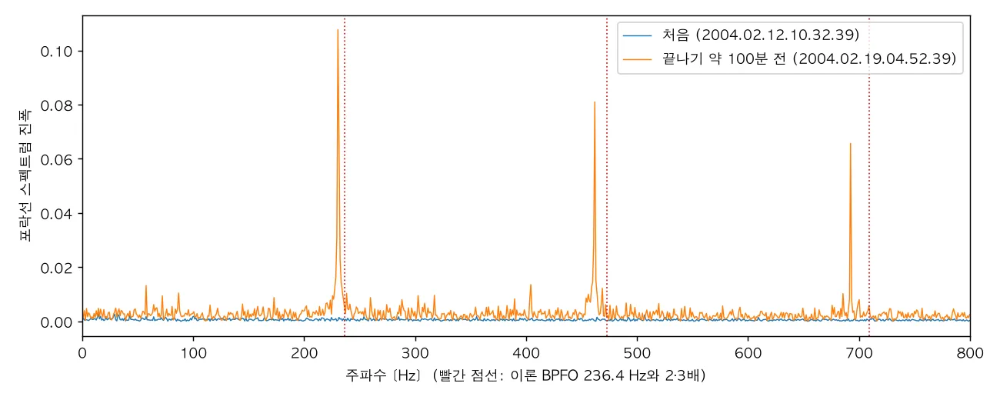
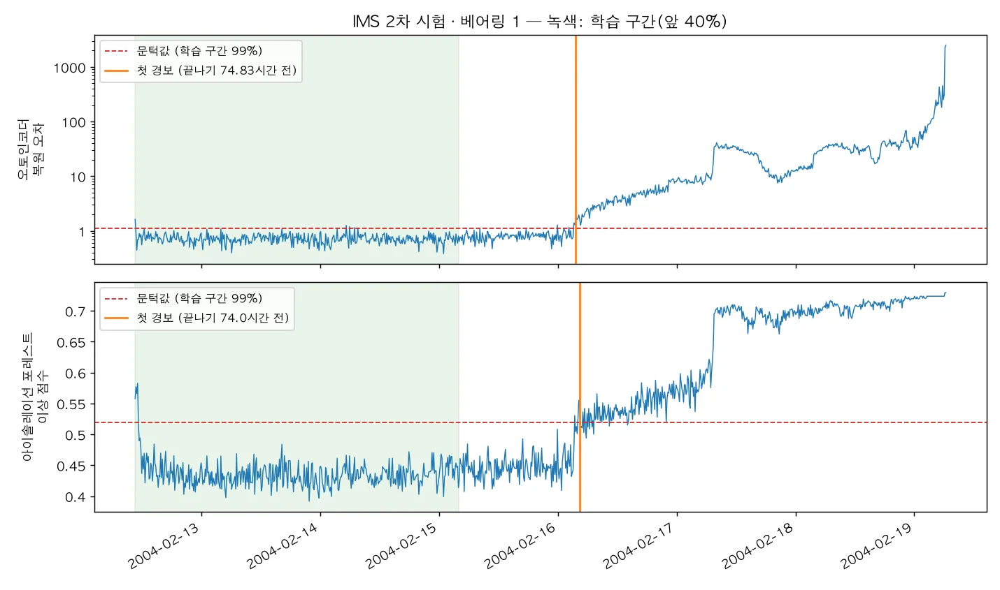

NASA IMS 베어링 2차 시험의 진동 스냅숏 984개에서 특징을 추출하고, 물리 공식(BPFO)·한 페이지 오토인코더·Isolation Forest·Chronos-2 제로샷이 고장 몇 시간 전에 처음 알람을 울리는지 비교합니다. 오토인코더는 74.8시간 전에 울렸습니다.
무엇을 · 왜#
| 단계 | 하는 일 | 배우는 것 |
|---|---|---|
| 특징 | 1초 진동(2만 개 숫자)을 RMS·첨도·BPFO 성분·64칸 스펙트럼으로 줄입니다 | 모델은 원파형보다 특징을 봅니다 |
| 물리 공식 | 베어링 결함 주파수(BPFO)의 포락선 에너지가 평소의 4배를 넘으면 알람 | 현장의 "박사님 공식"이 하는 일 |
| 오토인코더 | 정상 구간만 배우고, 다시 그려 내지 못하면 이상 | 라벨 없이도 쓸 수 있는 ML |
| 비교 | 끝나기 몇 시간 전에 처음 울렸나(선행시간) | 라벨이 "끝에 고장" 하나뿐일 때의 공정한 비교 |
IMS 데이터의 정답은 "시험이 끝날 때 베어링 1 외륜이 망가졌다"뿐입니다. 그래서 정밀도·재현율이 아니라 선행시간으로 비교합니다. 점수가 문턱값을 3번 연속 넘으면 알람을 울리도록 정합니다.
따라 하기#
-
데이터를 받습니다. 1.07 GB를 받아 2차 시험 984개 파일만 압축을 풉니다.
bash textbook/00_get_data.sh # IMS 2차 시험: 984개 (984개여야 함)파일은
4.+Bearings.zip→IMS.7z→2nd_test.rar순서로 세 겹 압축되어 있습니다. macOS의bsdtar가 7z와 rar를 모두 읽습니다. 3차 시험은4th_test/라는 이름으로 풀리니 주의하세요. -
특징을 추출하고 물리 규칙을 실행합니다(약 5초).
.venv/bin/python textbook/01_ims_features.py
RMS·첨도·BPFO 대역 에너지. BPFO가 16일 새벽에 먼저 오르고, RMS는 17일 아침에 계단처럼 오릅니다 BPFO는 베어링 치수와 회전수로 계산하는 외륜 결함 주파수입니다. 이 시험대(Rexnord ZA-2115, 2,000 rpm)의 이론값은 236.4 Hz입니다. 시험이 끝나기 100분 전에는 포락선 스펙트럼의 봉우리가 230.5 Hz와 그 2·3배에 나타났습니다. 이론값 한 점만 보면 놓칠 수 있으므로 ±3% 범위를 살펴봅니다.

포락선 스펙트럼: 처음(파랑)과 끝나기 100분 전(주황). 점선이 이론 BPFO와 2·3배 -
한 페이지 오토인코더를 실행합니다(약 2초). 핵심은 아래 열몇 줄입니다.
X = np.load(IN / "logspec64.npy") # 스냅숏마다 64칸 로그 스펙트럼 n_train = int(len(X) * 0.4) # 앞 40%는 건강하다고 가정 scaler = StandardScaler().fit(X[:n_train]) Z = scaler.transform(X) # 오토인코더: 64 → 16 → 4 → 16 → 64, 입력을 그대로 출력하도록 학습 ae = MLPRegressor(hidden_layer_sizes=(16, 4, 16), max_iter=3000, random_state=0) ae.fit(Z[:n_train], Z[:n_train]) ae_score = ((ae.predict(Z) - Z) ** 2).mean(axis=1) # 복원 오차 thr = np.percentile(ae_score[:n_train], 99) # 문턱값: 학습 구간 오차의 99% over = ae_score > thr # 3번 연속 넘으면 알람.venv/bin/python textbook/02_ae_one_page.py
위: 오토인코더 복원 오차(로그 눈금), 아래: Isolation Forest. 녹색이 학습 구간, 주황 선이 첫 알람 -
같은 RMS를 Chronos-2 제로샷으로도 봅니다(3장에서 자세히).
.venv/bin/python textbook/04_zero_shot_chronos.py -
다섯 방법의 결과를 비교합니다.
방법 문턱값(한 번 정하고 고정) 첫 알람 끝나기 전 오토인코더 학습 구간 오차의 99% 02-16 03:32 74.8시간 Isolation Forest 학습 구간 점수의 99% 02-16 04:22 74.0시간 BPFO 물리 규칙 건강 구간 중앙값 × 4 02-16 04:32 73.8시간 Chronos-2 제로샷(RMS) 앞 40% 점수의 99% 02-17 07:32 46.8시간 RMS 규칙 건강 구간 중앙값 × 2 02-17 07:52 46.5시간
알아 둘 점#
- 스펙트럼을 보는 세 방법이 한 시간 안에 함께 울렸습니다. RMS만 보는 두 방법은 27시간쯤 늦었습니다. RMS는 17일 아침 계단처럼 오를 때에야 문턱값을 넘었습니다.
- 무엇이 고장인지 말해 주는 것은 BPFO 규칙뿐입니다. 오토인코더와 Isolation Forest는 "평소와 다르다"까지만 알려 줍니다.
- 문턱값 민감도가 다릅니다. BPFO 규칙은 배수 k를 1.5~10으로 바꿔도 69~75시간으로 거의 같습니다. RMS 규칙은 k=2면 46.5시간인데 k=3이면 3.0시간, k≥6이면 알람이 없습니다.
- 시험 시작 부분에서는 점수가 튑니다. Isolation Forest는 학습 구간의 첫 스냅숏 4개가 문턱값을 넘습니다. 감시를 학습이 끝난 뒤부터 시작했기 때문에 알람으로 이어지지 않았습니다.
한 번의 시험
베어링 하나, 시험 한 번(n=1)의 결과입니다. 이 순위를 다른 설비로 일반화하지 마세요. 마지막 두 파일은 신호가 거의 없어(RMS 0.001 g) 설비가 이미 멈춘 뒤로 보입니다. 마지막으로 작동하던 시각을 기준으로 삼으면 선행시간이 모두 0.33시간씩 줄어듭니다.
확인 문제#
- IMS에서 정밀도·재현율 대신 선행시간으로 비교하는 이유는 무엇인가요?
정답
정답 라벨이 "시험 끝에 베어링 1 외륜 손상" 하나뿐이라, 어느 스냅숏부터가 이상인지 알 수 없기 때문입니다. 시험 종료(고장)보다 얼마나 먼저 알람이 울렸는지만 공정하게 비교할 수 있습니다.
- 오토인코더의 문턱값을 학습 구간 오차의 99%로 정하면, 정상 구간에서도 알람이 날 수 있나요? 그것을 막는 장치는 무엇인가요?
정답
네. 정의상 학습 구간 스냅숏의 약 1%는 문턱값을 넘습니다. 그래서 "3번 연속 넘을 때만 알람"으로 일시적인 초과를 걸러 냅니다.
- 같은 날 같은 시각에 울렸다면 BPFO 규칙과 오토인코더 중 현장에 먼저 들이고 싶은 것은 어느 쪽이고, 왜인가요?
정답
BPFO 규칙입니다. 알람과 함께 "베어링 외륜"이라는 고장 모드를 알려 주므로 정비 담당자가 바로 부품과 작업을 정할 수 있습니다. 문턱값을 바꿔도 결과가 거의 변하지 않습니다. 오토인코더는 다른 종류의 이상(불균형 등)까지 잡을 수 있으니 함께 두는 것이 좋습니다.